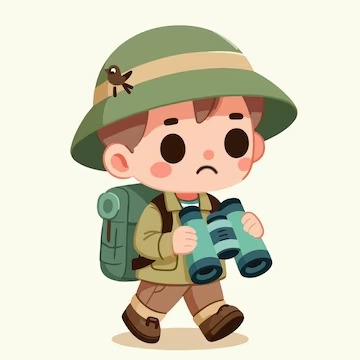
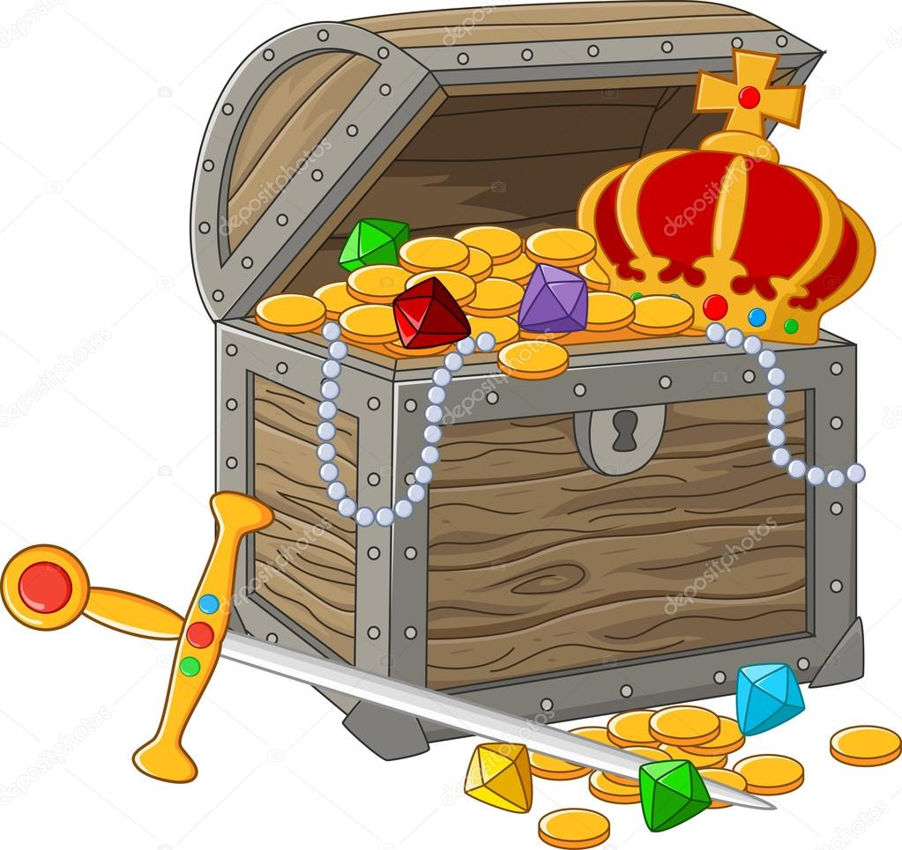

Você é um arqueólogo destemido em busca de um artefato perdido. Sua jornada começa no Brasil, onde você deve decidir seu primeiro destino. Onde você irá primeiro?
Você decidiu explorar a Chapada Diamantina.
Você escolheu explorar a Serra do Roncador.
Você encontrou cavernas incríveis na Chapada Diamantina. Dentro de uma delas, você descobre um mapa que sugere que o próximo destino é a Patagônia, onde mais segredos aguardam.

Você desistiu e voltou para casa. Fim da jornada.
Você descobriu algo sobre as lendas locais. As pistas sugerem que o próximo destino é a Patagônia.
Você decidiu explorar as montanhas da Serra do Roncador.
Você está na Patagônia, enfrentando os desafios do frio intenso.
Você voltou para investigar as lendas locais.
Você escolheu seguir as geleiras à esquerda.
Você seguiu as geleiras à direita.

Você encontrou a caverna de gelo. Você explora a caverna e finalmente encontra o artefato perdido. Parabéns!
Você decidiu retornar e tentar o outro caminho. Após uma longa jornada, você finalmente encontra a caverna de gelo e o artefato perdido!